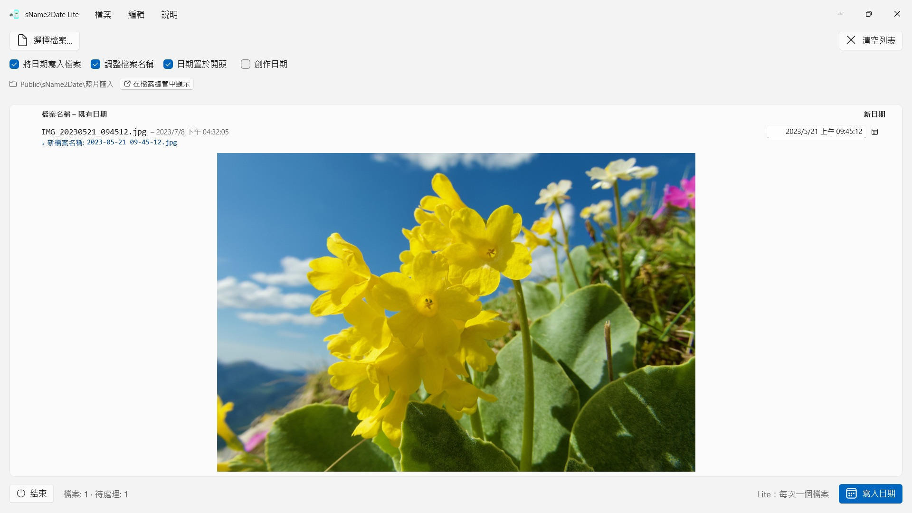
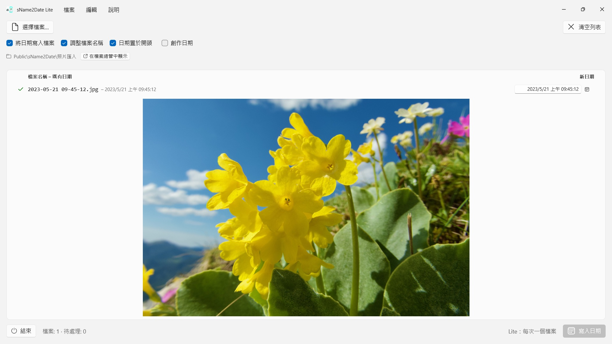

從檔案名稱讀出日期，當作拍攝日期寫進一張照片或一段影片——讓照片管理程式和檔案總管正確排序。每次一個檔案，免費，一切都能用 Ctrl+Z 還原。


許多照片和影片把日期帶在檔案名稱裡，錄音和 PDF 等文件也是如此——卻不在程式尋找日期的地方。從聊天軟體、掃描器或舊封存匯入一張影像，拿到的是 IMG_20240115_103000.jpg、假期 15.01.2024.jpg 或 帳單 23112024.pdf 這樣的檔案，它在每個照片管理程式和檔案總管裡都顯示成今天的日期。
sName2Date 從檔案名稱讀出日期，並把它當作拍攝日期寫進檔案。若檔案還沒有拍攝日期，就替它建立一個。對於 PDF 等沒有拍攝日期的檔案，App 會設定檔案的建立日期與修改日期。 這個版本每次處理一個檔案，而對這個檔案可以做全部的事。
25 種語言：英文、德文、捷克文、克羅埃西亞文、荷蘭文、芬蘭文、法文、匈牙利文、義大利文、日文、韓文、挪威文（書面挪威文）、波斯文、波蘭文、葡萄牙文（巴西與葡萄牙）、羅馬尼亞文、俄文、西班牙文、瑞典文、泰文、土耳其文、烏克蘭文、中文（簡體與繁體）。App 會依照 Windows 的顯示語言。
可辨識的寫法
常見形式的日期與時間，其中包括：
- 2024-01-15 10-30-00
- IMG_20240115_103000
- IMG-20240115-WA0001
- 2024-01-15 · 2024 01 15 · 2024_01_15
- 15.01.2024 · 15-01-2024 · 15.01.24 · 15012024
- January 15 2024 · Jan. 15, 2024——英文的月份名稱
- 2016 04 · 04-2016——只有年與月
拼寫成文字的月份名稱，會以 App 的語言和英文讀取，長式與縮寫皆可。中文的月份寫法（1月）不是由字母組成的字詞，因此不在此列——中文名稱請用上面的數字形式，例如 2024-01-15 或 15.01.2024，這些一律讀得到。
名稱中只有日期時，會採用一個假定的時間；由你決定是哪一個。若連日也缺了，就以該月的第一天為準——列表會一併說明。名稱中有多個日期時，以第一個為準。而在日與月可能互換的情況下，由你決定——預設值來自 Windows 的地區格式，受影響的檔案會特別標示出來，而不是默默猜測。
名稱中完全沒有日期時，你可以自己在該列右側填入。可回溯到 1826 年，也就是現存最早照片的年份——十九世紀掃描而來的影像，因此和昨天拍的一樣可以標註日期。
會更動什麼
寫入的是 EXIF DateTimeOriginal 與 DateTimeDigitized 以及 TIFF DateTime，影片與錄音則是容器中的建立日期。也可選擇一併寫入檔案本身的建立日期與修改日期。
影像資料維持原樣：JPEG 不會重新壓縮，影片不會重新編碼。處理影片與錄音時，本 App 通常只更動容器中的少數位元組，而不是重寫整個檔案——因此再大的影片也是一瞬間就完成。寫入之後，本 App 會把日期讀回來核對；該列的顏色會告訴你日期落在哪裡。
拍攝日期寫進檔案本身的格式有 JPEG、TIFF 和 HEIC（需要 Microsoft 的 HEIF 影像延伸模組），影片格式 MP4、MOV 和 M4V，以及音訊格式 M4A 和 M4B。PNG、GIF、WebP、AVI 與 RAW 照片會在旁邊得到一個 XMP 附屬檔案，許多照片程式都會一併讀取——該列會顯示藍色勾號。
無法容納拍攝日期的檔案也能處理
PDF、文字檔、試算表根本沒有放拍攝日期的欄位——但它們照樣會進入列表。本 App 會在這些檔案上設定檔案本身的建立日期與修改日期，那是這個日期唯一能落到的地方；該列會以橙色勾號而不是綠色勾號來表示。所以這裡不看副檔名——PDF、文字檔、試算表、封存檔，全都可以。
若根本不希望檔案被碰到，就把視窗上方的「將日期寫入檔案」勾選取消；這時本 App 只調整檔案名稱。
名稱也一起處理
需要的話，本 App 會在同一次執行中把檔案名稱也改成 ISO 寫法：假期 15.01.2024.jpg 會變成 2024-01-15 12-00-00 假期.jpg。名稱與拍攝日期從此說的是同一件事。
一切都可以還原
一次執行可用 Ctrl+Z 完整還原——拍攝日期、檔案時間戳記，以及變更過的檔案名稱。Ctrl+Y 可再次套用。
一次處理更多：完整版 sName2Date
完整版 sName2Date 處理的不是單一檔案，而是整個資料夾：它會載入資料夾，需要時連同所有子資料夾，為每個檔案顯示找到的日期，並一次寫入整批 —— 就算是一趟旅行的上千張照片也一樣。已經有拍攝日期的檔案，可以視需要略過。
如果只有一個檔案，眼前這個版本就夠用了。
在你的 PC 上，也僅在那裡
沒有帳號，沒有雲端，沒有分析，沒有廣告。App 只存取你交給它的檔案。每一種語言都配有完整的說明文件。
- 需要 Windows 11 或以上版本
- 支援 24 種語言
- 技術支援： SwiftAppsBavaria@gmx.net
- sName2Date 隱私權政策